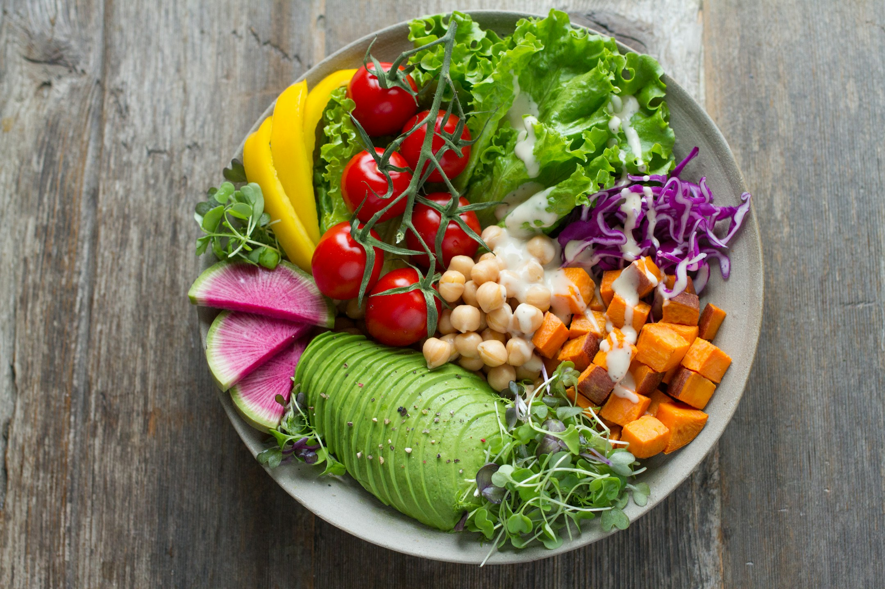
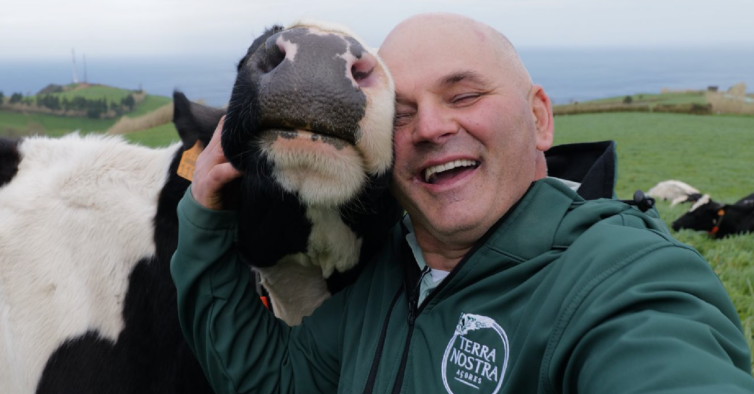
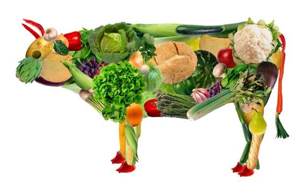

Uma dieta vegetariana pode oferecer inúmeros benefícios à saúde.
Pratos vegetarianos são ricos em fibras, vitaminas e minerais,
promovendo uma digestão saudável e fortalecendo o sistema
imunológico. Eles também são naturalmente baixos em gorduras
saturadas, ajudando a manter níveis saudáveis de colesterol e
reduzindo o risco de doenças cardíacas. Além disso, uma alimentação
baseada em vegetais contribui para a preservação do meio ambiente,
pois reduz a emissão de gases de efeito estufa e o consumo de
recursos naturais. Optar por refeições vegetarianas é uma escolha
sustentável e nutritiva.
Por: Guilherme Finardi
Ler mais

Adotar uma dieta vegetariana tem um impacto significativo na causa
animal. Ao escolher não consumir produtos de origem animal,
contribuímos para a redução do sofrimento e da exploração dos
animais criados em fazendas industriais. A criação intensiva de
animais frequentemente envolve condições cruéis, onde os animais são
confinados em espaços apertados e submetidos a procedimentos
dolorosos. Além disso, uma dieta vegetariana ajuda a diminuir a
demanda por carne, leite e ovos, levando a uma menor quantidade de
animais sendo criados e abatidos. Dessa forma, o vegetarianismo é
uma escolha ética que promove o bem-estar animal e um tratamento
mais compassivo.
Por: Guilherme Finardi
Ler mais

Optar por uma dieta vegetariana não significa perder nutrientes
importantes que são encontrados na carne bovina. Existem diversos
alimentos que podem substituir as partes da vaca de maneira eficaz.
Por exemplo, o tofu e o tempeh são excelentes fontes de proteínas e
podem ser usados em uma variedade de pratos, desde salteados até
grelhados. Lentilhas e feijões são ricos em ferro e fibras, além de
serem versáteis em sopas, ensopados e saladas. As nozes, sementes e
quinoa fornecem gorduras saudáveis, proteínas e minerais essenciais.
Além disso, vegetais de folhas verdes escuras, como espinafre e
couve, são ótimas fontes de cálcio e ferro. Com uma combinação
equilibrada desses alimentos, é possível obter todos os nutrientes
necessários sem consumir carne bovina.
Por: Guilherme Finardi
Ler mais